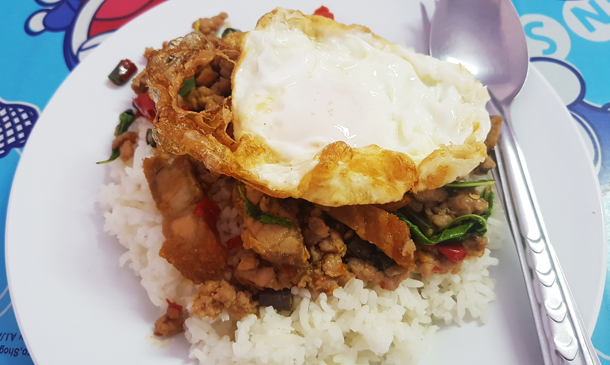

Street Food — Thailand's open kitchen
Thai street food culture is unmatched in Asia — arguably the world. Bangkok's street stalls and night markets operate as a decentralized restaurant ecosystem: specialists who do one thing perfectly for decades. Michelin has awarded Bib Gourmands and even stars to Bangkok street stalls.
Moo Ping
หมูปิ้ง
Pork Skewers
Grilled pork skewers marinated in coconut milk, fish sauce, palm sugar, garlic, and coriander root. The coconut milk caramelizes on the grill for a slightly charred, sweet surface. Sold from carts at dawn — the ultimate Thai breakfast with sticky rice.

Pad Kra Pao
ผัดกะเพรา
Holy Basil Stir-Fry
Minced pork or chicken stir-fried at maximum heat with oyster sauce, fish sauce, Thai chili, garlic, and holy basil. Topped with a crispy fried egg (kai dao). Thailand's most-ordered dish. Every Thai person has eaten this hundreds of times.
Roti
โรตี
Thai-Muslim Flatbread
Flaky, crispy-edged flatbread pan-fried in clarified butter on a flat griddle. Eaten savory with massaman curry, or sweet with banana and condensed milk. Southern Thailand's street snack — a South Asian influence through Muslim trading routes.

Satay (Sateh)
สะเต๊ะ
Grilled Skewers
Skewered and grilled meat (chicken or pork) marinated in turmeric and lemongrass. Served with peanut dipping sauce and ajad (pickled cucumber-chili relish). Malaysian-Thai border tradition. The peanut sauce is made fresh, not from a jar.
Khao Niao Mamuang
ข้าวเหนียวมะม่วง
Mango Sticky Rice
Seasoned glutinous rice with ripe mango and salted coconut cream. Street cart specialty at its peak in April–June. The salted coconut cream drizzle is critical — without it, the dish is too sweet. A perfect dessert.
Gai Tod (Fried Chicken)
ไก่ทอด
Crispy Fried Chicken
Thai fried chicken marinated in lemongrass, garlic, coriander root, and fish sauce. Fried until shatteringly crispy. Served with sticky rice and a sweet chili-garlic dipping sauce. Incomparably better than Western fried chicken due to the aromatic marinade.
Kanom Krok
ขนมครก
Coconut Rice Pancakes
Small round coconut milk and rice flour pancakes cooked in a special dimpled cast iron pan. Crispy exterior, soft and custardy interior. Sweet and slightly salty version sold simultaneously. A purely Thai street snack with no international equivalent.
Tod Mun Pla
ทอดมันปลา
Fish Cakes
Ground fish mixed with red curry paste, kaffir lime leaves, and green beans, formed into flat patties and deep-fried until crispy. Served with sweet chili sauce and crushed peanuts. One of the most distinctive Thai appetizers — the curry paste in the fish cake is the revelation.
Hoi Tod
หอยทอด
Oyster Omelette
Fresh oysters mixed with starch batter and egg, fried on a screaming-hot griddle until crispy-edged and slightly gooey in the center. Topped with bean sprouts and served with sriracha. A Bangkok street specialty that requires the right amount of heat and a confident flip.
Khao Tom
ข้าวต้ม
Rice Congee
Thai-style rice porridge with ginger, garlic, and your choice of minced pork, fish, or shrimp. A late-night comfort food eaten after midnight at Bangkok street stalls. Garnished with fried garlic, fresh ginger threads, and white pepper.